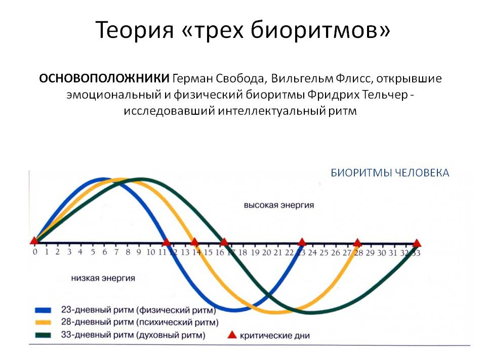

Жизнь человека, как и все в природе, подвержено влиянию циклических изменений. Успешность того или иного вида деятельности в каждый момент времени определяется балансом притока и оттока его внутренней энергии. Такой баланс изменяется в соответствии с циклами биоритмов человека. Это уникальное явление было открыто в начале XX века. Существует три биоритма, которые сопровождают человека от момента рождения до смерти: физический, эмоциональный и интеллектуальный. В жизни человека есть «пиковые» дни, когда он достигает совершенства во всем, а также критические дни, которые могут сопровождаться различными неприятностями и неудачами в делах. Расчет цикла каждого биоритма позволяет определить, насколько успешным будет соответствующий вид деятельность в тот или иной промежуток времени.
Физический цикл
Физический биоритм человека представлен циклом, длительность которого составляет 23 дня. Первая половина цикла составляет положительный период цикла, а вторая – отрицательный. Кроме того, нужно учитывать наличие критических дней при смене одного цикла другим и при переходе от одной фазы к другой. Физический цикл биоритмов человека определяет возможности, связанные с функционированием организма человека. Другими словами, положительная фаза этого цикла сопровождается отличным самочувствием и успешным исходом тех дел, которые требуют физических усилий. Негативный период цикла, а также критические дни – то время, когда у человека все валится из рук, и довольно тяжело найти в себе силы для решения повседневных задач.
Эмоциональный цикл
Эмоциональный биоритм человека определяет его творческие возможности, общее психическое состояние (периоды оптимизма и пессимизма), а также влияет на отношения между людьми. Длительность цикла составляет 28 дней. Первая его половина, которая является превосходным периодом для реализации творческой деятельности и налаживания любовных, дружеских и деловых связей – получила название «фаза разгрузки». Следующая за ней «фаза перезарядки» менее удачна с точки зрения чувствительности человека. В этот период люди обидчивы, невосприимчивы к критике, болезненно реагируют на любые неудачи. Не следует также забывать о критических днях, которые сопровождают эмоциональный цикл биоритма человека. В эти моменты могут случаться неожиданные вспышки эмоций, которые провоцируют сильнейшие конфликты. Впоследствии люди жалеют о том, что произошло. Отслеживая такие дни, можно правильно располагать своими возможностями, а также уберечь себя от неприятных ситуаций.
Интеллектуальный цикл
Длительность цикла интеллектуального биоритма человека составляет 33 дня. Здесь также наблюдается разделение на положительный и отрицательный периоды, разделяемые критическими днями. Положительный период характеризуется остротой ума, легким решением всех умственных задач, а также реализацией самых честолюбивых планов. В такие дни человек чувствует недостаток интеллектуальной нагрузки и пытается снизить дискомфорт чтением книг, разгадыванием кроссвордов или другими способами. Отрицательный период – не лучшее время для активной мозговой деятельности, поскольку даже самые простые задачи могут показаться невероятно сложными, и займут в несколько раз больше времени, чем обычно. Концентрация снижена, часто допускаются ошибки. Критические дни интеллектуального цикла биоритма человека становятся причиной серьезных ошибок. Такие моменты лучше провести в состоянии покоя, ни в коем случае не браться за решение важных дел, так как в голове – сплошная путаница. Невозможно правильно оценить ситуацию и сделать верные выводы.
Взаимодействие циклов
Биоритмы человека не действуют сами по себе. Каждый оказывает влияние на другие. Это хорошо видно на стандартном графике кривых биоритмов, где они циклично пересекаются между собой. От физического биоритма человека зависит также его общее состояние. Отрицательная фаза этого цикла накладывает свой отпечаток на эмоциональную и интеллектуальную сферу жизни. Например, в пиковый день эмоционального биоритма человека отрицательное значение физического цикла значительно снизит творческие способности. Однако и превосходная физическая форма в сочетании с крайне неуравновешенным психическим состоянием или потерянностью, которая отражает критические дни интеллектуального биоритма человека, также теряет свое значение. Для того чтобы максимально результативно использовать свои внутренние ресурсы, необходимо отслеживать пиковые и критические дни биоритмов человека. Особенно важны те периоды, когда все три цикла находятся в положительной или отрицательной фазе. В эти моменты происходят важные события в жизни человека, а правильная оценка своих возможностей позволит грамотно воспользоваться своей энергией или избежать больших неприятностей.
Источник: http://geocult.ru/bioritmyi/bioritmyi-cheloveka